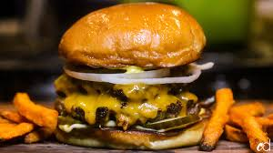

Burger Recipe

Description
A homemade Smash Burger is quick and easy to make. These fly off the grill in minutes
so it's a great way to feed a crowd.
Smash burgers have the iconic flavor profile of classic Burgers, but that double
burger patty with cheese melted in between is irresistible and you'll love the
special sauce.
Ingredients
- 1,5 lbs 80/20 ground beef
- 4 brioche buns
- Store bought special sauce
- lettuce, tomato and onions
- salt and pepper
- Cheese slices
Directions
- Prepare Patties - Divide 1 1/2 lbs of ground beef into 8 equal
portions (3 oz each), cover, and refrigerate until ready to cook.
- Prepare toppings - slice tomatos, shred lettuce, slice onions
- Toast buns
- Cook patties - smash with parchment paper on a hot pan
- Add cheese, let melt
- Assemble burgers
Back to Recipes